Activity: Copy and paste face sets
This activity demonstrates the method of copying and pasting design features from one document to another.
Copy an existing set of design features and paste them onto another part. In this activity you will:
-
Create a user-defined set of design features.
-
Copy this set from its resident document.
-
Paste this set into another part document.
-
Attach the pasted geometry.
-
Precisely dimension the face set.
-
Open copy1.par.
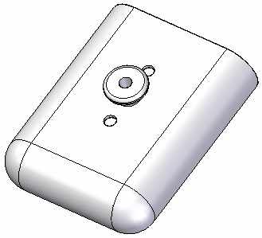
Select Protrusion 8, Protrusion 9, Round 10, Hole 2. All features associate with the clip button.
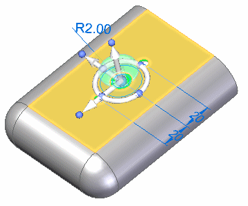
Make sure the steering wheel plane lies on the highlighted face. This ensures the correct orientation when pasting the feature face set.
Copy this set by one of the following.
-
Use the right-click Copy shortcut command.
-
Press Ctrl+C.
Paste the copied clip and hole features onto an alternate cell phone belt-carrier.
Open the copy2.par part file.
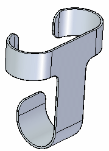
Paste the previously-selected set by either of the following.
-
Press Ctrl+V, or
-
Use the right-click shortcut Paste command.
You can see the set in this document. Note that the pasted set connects to your cursor, and you can move it around.
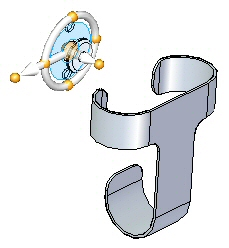
Move the set over the front face of the carrier and press the F3 key to lock that plane.
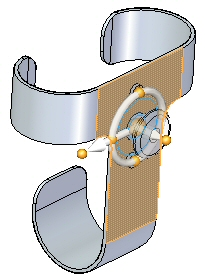
Position it as shown, and left-click to paste it.
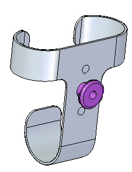
Attach the set to the carrier part using the right-click shortcut Attach command.
The set converts from construction faces to faces on this design body.
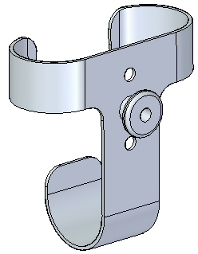
When pasted, the clip/hole set places randomly on the design body. Align the set on the vertical center of the face.
In PathFinder, select the set of features. Position the steering wheel origin at the hole center shown.
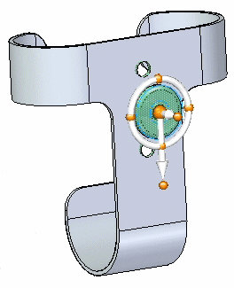
Rotate the primary axis of the steering wheel as shown. This is your move direction.
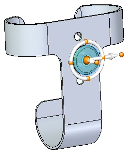
Select the primary axis and in the command bar, select Midpoint in the Keypoints option. Click when the midpoint symbol on the top edge appears. Press Escape.
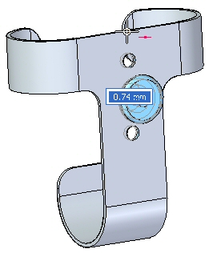
Activity complete. Save and Close both part files.
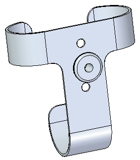
In this activity you learned how to copy feature(s) to the clipboard. The copied features can be pasted into the same file or another file.
-
Click the Close button in the upper-right corner of this activity window.